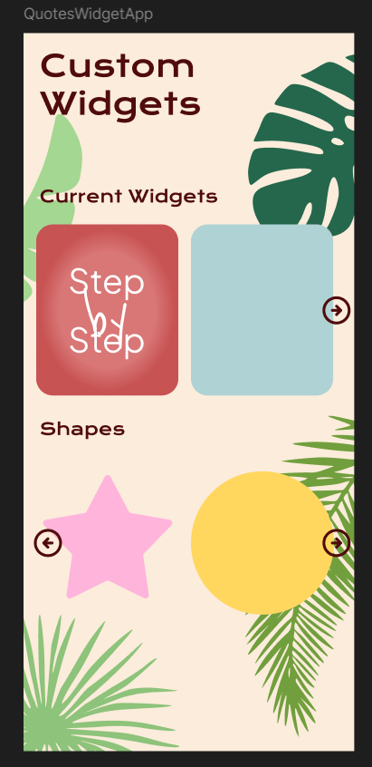

Quotes Garden (IN PROGRESS)
A mobile-app concept for collecting and displaying favourite quotes through a calm, garden-inspired visual experience.

A mobile-app concept for collecting and displaying favourite quotes through a calm, garden-inspired visual experience.
